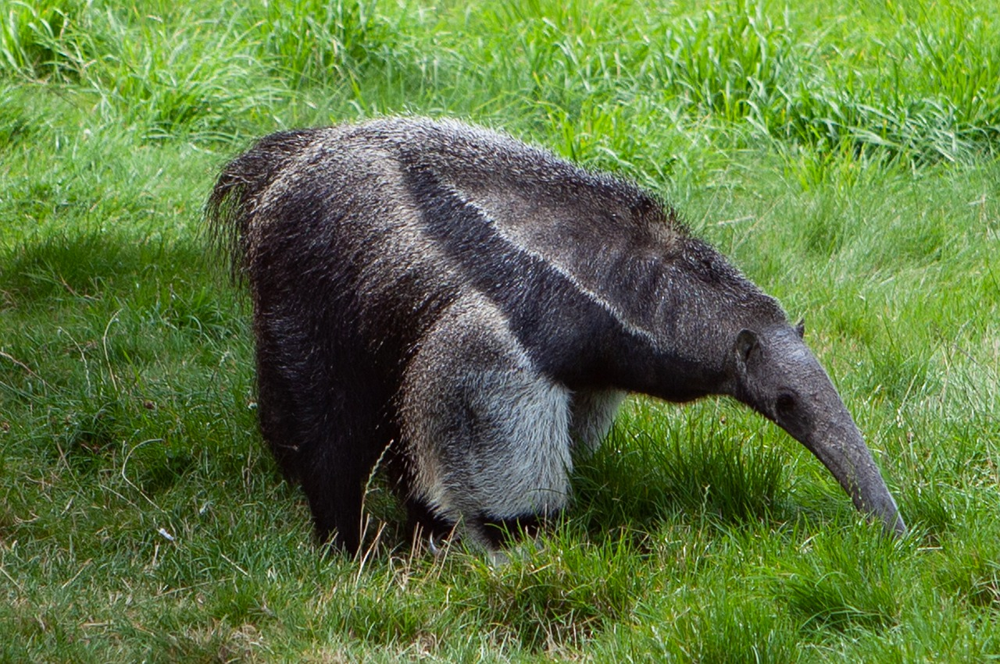
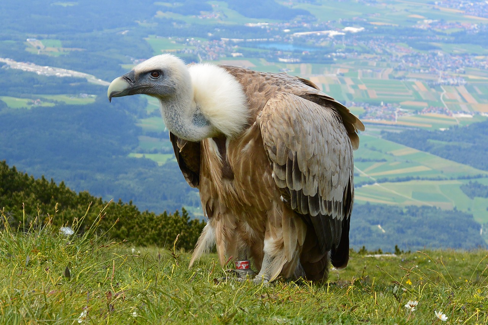
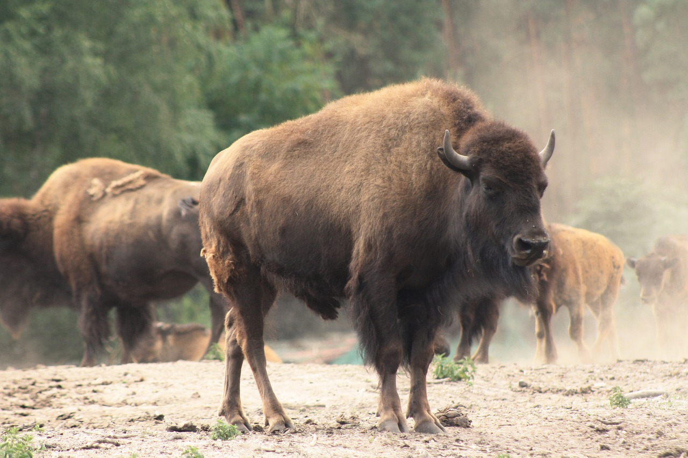

Welcome to My Virtual Zoo
Welcome to my virtual zoo! I hope you like it. If you'd like to see more animals added to the zoo, please send me a message using the "Contact Us" link above.
 My Virtual Zoo
My Virtual Zoo Welcome to my virtual zoo! I hope you like it. If you'd like to see more animals added to the zoo, please send me a message using the "Contact Us" link above.

Flamingos or flamingoes[1] /fləˈmɪŋɡoʊz/ are a type of wading bird in the family Phoenicopteridae, the only bird family in the order Phoenicopteriformes. Four flamingo species are distributed throughout the Americas, including the Caribbean, and two species are native to Africa, Asia, and Europe.
For More Information, please visit: https://en.wikipedia.org/wiki/Flamingo
Ursidae is a family of mammals in the order Carnivora, which includes the giant panda, brown bear, and polar bear, and many other extant and extinct mammals. A member of this family is called an ursid or a bear. They are widespread across the Americas and Eurasia. Bear habitats are generally forests, though some species can be found in grassland and savana regions, and the polar bear lives in arctic and aquatic habitats. Most bears are 1.2–2 m (4–7 ft) long, plus a 3–20 cm (1–8 in) tail, though the polar bear is 2.2–2.44 m (7–8 ft) long, and some subspecies of brown bear can be up to 2.8 m (9 ft). Weights range greatly from the sun bear, which can be as low as 35 kg (77 lb), to the polar bear, which can be as high as 726 kg (1,600 lb). Population sizes vary, with six species classified as vulnerable with populations as low as 500, while the brown bear has a population of over 100,000 and the American black bear around 800,000. No ursid species have been domesticated, though some bears have been trained for entertainment.[1]
For More Information, please visit: https://en.wikipedia.org/wiki/List_of_ursids
 The giant anteater (Myrmecophaga tridactyla), also known as the ant bear, is an insectivorous mammal native to Central and South America. It is one of four living species of anteaters, the only extant member of the genus Myrmecophaga, and is classified with sloths in the order Pilosa. This species is mostly terrestrial, in contrast to other living anteaters and sloths, which are arboreal or semiarboreal. The giant anteater is the biggest of its family, 182 to 217 cm (5.97 to 7.12 ft) in length, with weights of 33 to 50 kg (73 to 110 lb) for males and 27 to 47 kg (60 to 104 lb) for females. It is recognizable by its elongated snout, bushy tail, long fore claws, and distinctively colored pelage.
The giant anteater can be found in multiple habitats, including grassland and rainforest. It forages in open areas and rests in more forested habitats. It feeds primarily on ants and termites, using its fore claws to dig them up and its long, sticky tongue to collect them. Though giant anteaters live in overlapping home ranges, they are mostly solitary except during mother-offspring relationships, aggressive interactions between males, and when mating. Mother anteaters carry their offspring on their backs until weaning them. The giant anteater is listed as vulnerable by the International Union for Conservation of Nature. It has been extirpated from many parts of its former range. Threats to its survival include habitat destruction, fire, and poaching for fur and bushmeat, although some anteaters inhabit protected areas. With its distinctive appearance and habits, the anteater has been featured in pre-Columbian myths and folktales, as well as modern popular culture.
For More Information, please visit: https://en.wikipedia.org/wiki/Giant_anteater
 A vulture is a scavenging bird of prey. The New World vultures include the California condor and the Andean condor; the Old World vultures include the birds that are seen scavenging on carcasses of dead animals on African plains. Some traditional Old World vultures (including the bearded vulture) are not closely related to the others, which is why the vultures are to be subdivided into three taxa rather than two. New World vultures are found in North and South America; Old World vultures are native to Europe, Africa, and Asia, meaning that between the two groups, vultures are found on every continent except Australia and Antarctica (though Trigonoceps vultures have crossed the Wallace line).[2]
A particular characteristic of many vultures is a bald head, devoid of normal feathers. Although it has been historically believed to help keep the head clean when feeding, the bare skin may play an important role in thermoregulation.[3] Vultures have been observed to hunch their bodies and tuck in their heads in the cold, and open their wings and stretch their necks in the heat. Vultures also use urine as a way to keep themselves cool by urinating on themselves.[4] A group of vultures is called a kettle, committee or wake.[5] The term kettle refers to vultures in flight, while committee refers to vultures resting on the ground or in trees.[5] Wake is reserved for a group of vultures that are feeding.[5] The word Geier (taken from the German language) does not have a precise meaning in ornithology; it is occasionally used to refer to a vulture in English, as in some poetry.
For More Information, please visit: https://en.wikipedia.org/wiki/Vulture
 The American bison or simply bison (Bison bison), also commonly known as the American buffalo or simply buffalo, is an American species of bison that once roamed North America in vast herds. Its historical range, by 9000 BCE, is described as the great bison belt, a tract of rich grassland that ran from Alaska to the Gulf of Mexico, east to the Atlantic Seaboard (nearly to the Atlantic tidewater in some areas) as far north as New York and south to Georgia and, according to some sources, down to Florida, with sightings in North Carolina near Buffalo Ford on the Catawba River as late as 1750.[2][3][4] It nearly became extinct by a combination of commercial hunting and slaughter in the 19th century and introduction of bovine diseases from domestic cattle. With a population in excess of 60 million in the late 18th century, the species was down to 541 animals by 1889. Recovery efforts expanded in the mid-20th century, with a resurgence to roughly 31,000[5] animals today, largely restricted to a few national parks and reserves. Through multiple reintroductions, the species is now also freely roaming wild in some regions in Yakutia as well as Mexico.
Two subspecies or ecotypes have been described: the plains bison (B. b. bison), smaller in size and with a more rounded hump, and the wood bison (B. b. athabascae)—the larger of the two and having a taller, square hump.[6][7][8][9][10][11] Furthermore, the plains bison has been suggested to consist of a northern plains (B. b. montanae) and a southern plains (B. b. bison) subspecies, bringing the total to three.[9] However, this is generally not supported. The wood bison is one of the largest wild species of extant bovids in the world; it is the longest to attain body length of 3.5 m (11 ft), and surpassed by only the gaur and the wild yak and possibly the European bison in height. Among extant land animals in North America, the bison is the heaviest and the longest, and the second tallest after the moose. Spanning back many centuries, Native American tribes have had cultural and spiritual connections to the American bison. It is the national mammal of the United States of America.
For More Information, please visit: https://en.wikipedia.org/wiki/American_bison